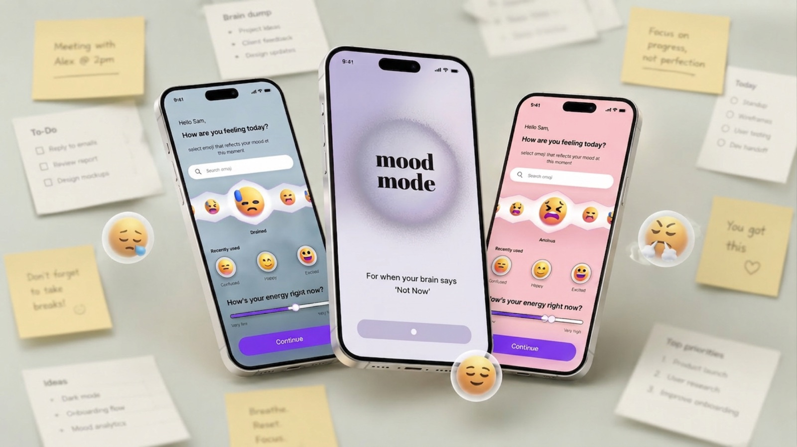

Starting is harder than planning
The moment of beginning is where people stall — so that's where the design should spend its effort.
MoodMode · Emotion-adaptive productivity
An iOS app for ADHD brains that asks how you're doing before it asks what you need to do — then shapes the next step to fit the day you're actually having.

To-do apps show the same list on good days and bad ones. For ADHD brains, starting is the hard part.
If the first step matches someone's mood and energy, they'll start sooner.
A two-question check-in that routes into three modes: Focus Sprint, Start Small, Reset & Refocus.
Prototype complete. Building the AI step-breakdown with a real OpenAI integration.
Chapter one
The gap
Productivity tools hand you the same list whether you woke up energised or running on empty. They're built for planning — but for many people with ADHD, the plan isn't the problem. Starting is.
On a low-energy day, a long list doesn't motivate. It confirms that you're behind. So the app gets closed, and the task waits another day.
For when your brain says ‘Not Now’.— the line that became MoodMode's front door
Lean UX assumptions
The moment of beginning is where people stall — so that's where the design should spend its effort.
A motivated morning and a drained afternoon need different kinds of help, not the same list.
If saying “not now” feels like failing, people leave. Every suggestion needs a guilt-free way out.
Chapter two
The check-in
MoodMode opens with an emoji mood picker and an energy slider — nothing else. Recently used moods sit one tap away, so checking in never feels like another task. That answer decides which of three modes you land in.
Try it — how are you feeling?
Feeling motivated
Tap a mood, then step through the flow →
Anatomy of a hard day
Start Small is where the AI does the most work, so it's where the design had to be most careful.
Step 1 · Check in
The user picks a mood and drags the energy slider down. No typing, no decisions about tasks yet.
Step 2 · Meet them there
The app names the feeling and offers one path — Start Small — with a quiet “Prefer something else?” underneath. The tone is permission, not pressure.
Step 3 · Brain dump
Three loose fields: what the task is, a short description the AI turns into steps, and a free space for whatever else is on your mind — “without worrying about structure and form”. Users can also write their own steps.
Step 4 · Tiny steps
The task becomes a checklist of small, concrete actions — “Open resume document”, “Change the project title”. Edit, add and reorder sit in a floating bar so the list stays the user's.
Step 5 · Count the win
Four of six steps done is celebrated as a win: “You have already made progress today.” The next option is a break, not more work.
Feel the modes
Focus Sprint
Notifications off, everything else hidden. (Demo runs 25 seconds instead of minutes.)
Reset & Refocus
Short resets like a walk, music or breathing come before any work is suggested.
Start Small
The list celebrates progress at every step, not just at the end.
Principles
Mood and energy come first. The app never shows work before it knows what you can handle.
Every suggestion has an exit: “Prefer something else?”
Rewards arrive after 25 focused minutes or a few small steps — never only when the list is empty.
Chapter three
3
Mood-matched modes, each with its own end-to-end flow
4
Lean UX phases from assumptions to prototype
40%
Faster task start in prototype testing
Next
I'm building MoodMode with a real OpenAI integration, so Start Small turns whatever people type into steps live — the riskiest assumption to get right, and the one most worth testing with real users.
Designing for low energy meant taking decisions away, not adding features.